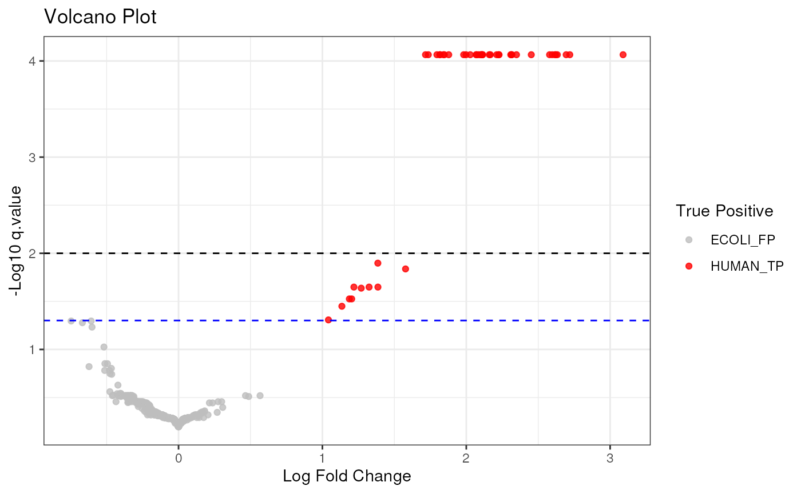

LimROTS: A Hybrid Method Integrating Empirical Bayes and Reproducibility-Optimized Statistics for Robust Analysis of Proteomics and Metabolomics Data
Source:vignettes/LimROTS.Rmd
LimROTS.RmdHow LimROTS Work?
The LimROTS approach initially uses the limma package Ritchie et al. (2015) to simulate the intensity data of proteins and metabolites. A linear model is subsequently fitted using the design matrix. Empirical Bayes variance shrinking is then implemented. To obtain the moderated t-statistics (or f-statistics), the adjusted standard error for each feature is computed, along with the regression coefficient for each feature (indicating the impact of variations in the experimental settings). Then, by adapting a reproducibility-optimized technique known as ROTS Suomi et al. (2017) to establish an optimality based on the largest overlap of top-ranked features within group-preserving bootstrap datasets (refer to Elo et al. (2008) for further information on the reproducibility-optimization). Finally based on the optimized parameters and this equation used to calculates the final statistics:
where
is the final statistics for each feature,
is the coefficient, and
is the adjusted standard error. LimROTS generates p-values from
permutation samples using the implementation available in
qvalue package Storey et al.
(2024), along with internal implementation of FDR adapted from
ROTS package Suomi et al. (2017).
Additionally, the qvalue package is used to calculate
q-values, were the proportion of true null p-values is set to the
bootstrap method. We recommend using permutation-derived p-values and
qvalues.
Computational Power
The number of samples, features, bootstrap iterations, and
k, which denotes the top list size for ranking, are the
four primary elements that determine the amount of computing resources
required for the optimisation process in LimROTS. It is therefore
advised to use at least 4 cores to execute LimROTS since it uses a
parallel processing implementation for the bootstrapping step. The
optimisation process is sequential and maybe time-consuming, based on
the k value; it is planned to be modified in order to make
the upcoming LimROTS version faster.
Parameter Description for LimROTS
LimROTS takes several parameters, and it should be
called correctly to obtain the desired output.
x: The input data, which can be aSummarizedExperimentobject or a matrix where rows represent features (e.g., genes, proteins) and columns represent samples. The values should be log-transformed.B: An integer representing the amount of bootstrap iterations. Default 1000.K: An optional integer representing the top list size for ranking. If not specified, it is set to one-fourth of the number of features.a1: Optional numeric value used in the optimization process. If defined by the user, no optimization occurs.a2: Optional numeric value used in the optimization process. If defined by the user, no optimization occurs [0,1].log: Logical, indicating whether the data is already log-transformed. Default isTRUE.progress: Logical, indicating whether to display a progress bar during bootstrap sampling. Default isFALSE.verbose: Logical, indicating whether to display messages during the function’s execution. Default isTRUE.meta.info: A data frame containing sample-level metadata, where each row corresponds to a sample. It should include the grouping variable specified ingroup.name. Ifx(data) is aSummarizedExperimentobject,meta.infomust be a vector of the metadata needed for the model to run and can be retrieved usingcolData().group.name: A string specifying the column inmeta.infothat represents the groups or conditions for comparison.seed.cl: An integer specifying the seed for randomization; if not provided, the default is 1234.cluster: A parallel cluster object for distributed computation, e.g., created bymakeCluster(). Default is 2.formula.str: A formula string for modeling. It should include “~ 0 + …” to exclude the intercept from the model. All the model parameters must be present inmeta.info.robust: Logical, indicating whether robust fitting should be used. Default isTRUE.trend: Logical, indicating whether to include trend fitting in the differential expression analysis. Default isTRUE.permutating.group: Logical, IfTRUE, the permutation for calculating the null distribution is performed by permuting the target group only specified ingroup.namePreserving all the other sample information. IfFALSE, the entire sample information retrieved frommeta.infowill be permuted (recommended to be set to TRUE).
UPS1 Case Study
To demonstrate LimROTS’ ability to detect true negatives complex scenarios, we are using a DIA proteomics data from a UPS1-spiked E. coli protein mixture Gotti et al. (2022) includes 48 samples: 24 samples analyzed with Spectronaut and another 24 analyzed with ScaffoldDIA software, with total of 1656 proteins. Eight different concentrations of UPS1 were used (0.1 to 50 fmol), grouped into two categories: low concentrations (0.1–2.5 fmol, labeled as Conc. 2, 12 Samples from each software) and high concentrations (5–50 fmol, labeled as Conc. 1, 12 Samples from each software).
A synthetic, unbalanced fake batches assigned to the samples. The assignment follows the ratio of:
#>
#> 1 2
#> F 18 6
#> M 6 18Additionally, 100 E. coli proteins were randomly selected, and an effect size of 10 was added to each. The expected outcome is that only the UPS1 human proteins will be identified as truly significant, while none of the remaining proteins should show significant differences between the concentration groups.
This scenario resembles a real-world case where the experiment involves unbalanced batch assignments or, for instance, an uneven gender ratio among the samples.
LimROTS can take a SummarizedExperiment object with all the metadata needed to run the model. In this example we importing UPS1.Case4 data available in LimROTS.
The original source of the dataset can be found here Gotti et al. (2022)
# Load the dataset
data("UPS1.Case4")
print(UPS1.Case4)
#> class: SummarizedExperiment
#> dim: 1656 48
#> metadata(0):
#> assays(1): norm
#> rownames(1656): O00762_HUMAN O76070_HUMAN ... Q59385_ECOLI Q93K97_ECOLI
#> rowData names(2): GeneID Description
#> colnames(48): UPS1_0_1fmol_inj1_x UPS1_0_1fmol_inj2_x ...
#> UPS1_50fmol_inj2_y UPS1_50fmol_inj3_y
#> colData names(4): SampleID tool Conc. fake.batchRun LimROTS
Although seed.cl internally control the seed
randomization during the parallel bootstrapping process. It is advisable
to establish a consistent seed prior to executing
LimROTS
set.seed(1234, kind = "default")
# Set metadata and formula for LimROTS analysis
meta.info <- c("Conc.", "tool", "fake.batch")
B <- 100 # Number of bootstrap samples
K <- 100 # Set the value for K based on the data size
K <- floor(K)
num_cores <- 2 # Number of cores for parallel processing
cluster <- makeCluster(num_cores) # Create a parallel cluster
group.name <- "Conc."
formula.str <- "~ 0 + Conc. + tool + fake.batch" # Formula for group comparison
# Run LimROTS analysis with trend and robust settings enabled
limrots.result <- LimROTS(
x = UPS1.Case4,
B = B, K = K, meta.info = meta.info,
cluster = cluster, group.name = group.name,
formula.str = formula.str, trend = TRUE,
robust = TRUE, permutating.group = FALSE,
seed.cl = 1234
)
#> Data is SummarizedExperiment object
#> Assay: norm will be used
#> Bootstrapping samples
#> | | | 0%
#> Optimizing parameters
#> Warning: One very small variance detected, has been offset away from zero
#> Calculating p-values
#> Calculating FDRNOTE: “In this instance, we configure the number of bootstrap iterations (B) and the count of top-ranked features for reproducibility optimization (K) to 100 both, in order to minimize the example’s run-time. For actual analyses, it is advisable to utilize a greater number of bootstraps (e.g., 1000). Also, for the number of cores to use we recommend to use at least 4 cores.
Volcano Plot with ggplot2
Utilising a Volcano plot and mapping the human UPS1 proteins at q-values of 1% and 5%, it is evident that LimROTS accurately identified the majority of actual positive proteins while detecting a limited number of simulated E.coli proteins.
# Create a data frame from the LimROTS results
limrots.result.df <- data.frame(
proteins = row.names(limrots.result$data),
LimROTS.FC = limrots.result$corrected.logf,
q.value = limrots.result$q_values$qvalues
)
# Mark proteins as true positives (HUMAN UPS1 proteins)
limrots.result.df$TP <- ifelse(grepl("HUMAN", limrots.result.df$proteins),
"HUMAN_TP", "ECOLI_FP"
)
# Create a volcano plot
ggplot(limrots.result.df, aes(
x = LimROTS.FC, y = -log10(q.value),
color = factor(TP)
)) +
geom_point(alpha = 0.8) +
theme_bw() +
labs(
title = "Volcano Plot", x = "Log Fold Change", y = "-Log10 q.value",
color = "True Positive"
) +
scale_color_manual(values = c("grey", "red")) +
geom_hline(yintercept = -log10(0.05), linetype = "dashed", color = "blue")+
geom_hline(yintercept = -log10(0.01), linetype = "dashed", color = "black")
Quality Control Plots
LimROTS generates p-values from permutation samples, along with FDR.
Additionally, the qvalue package is used to calculate
q-values and Benjamini-Hochberg adjusted p-values based on the
permutation-derived p-values. These can be used as Quality Control for
the LimROTS results. We recommend using permutation-derived p-values and
qvalues, though they should generally be very similar to the FDR and
Benjamini-Hochberg adjusted p-values.
## Quality Control Plots
# Plot of q-values
plot(limrots.result$q_values,
main = "Q-values", xlab = "Index",
ylab = "Q-value"
)
# Histogram of q-values
hist(limrots.result$q_values,
main = "Q-value Distribution",
xlab = "Q-value", col = "lightgreen", border = "white"
)
# Summary of q-values
summary(limrots.result$q_values)
sessionInfo()
#> R version 4.4.1 (2024-06-14)
#> Platform: x86_64-pc-linux-gnu
#> Running under: Ubuntu 22.04.5 LTS
#>
#> Matrix products: default
#> BLAS: /usr/lib/x86_64-linux-gnu/openblas-pthread/libblas.so.3
#> LAPACK: /usr/lib/x86_64-linux-gnu/openblas-pthread/libopenblasp-r0.3.20.so; LAPACK version 3.10.0
#>
#> locale:
#> [1] LC_CTYPE=C.UTF-8 LC_NUMERIC=C LC_TIME=C.UTF-8
#> [4] LC_COLLATE=C.UTF-8 LC_MONETARY=C.UTF-8 LC_MESSAGES=C.UTF-8
#> [7] LC_PAPER=C.UTF-8 LC_NAME=C LC_ADDRESS=C
#> [10] LC_TELEPHONE=C LC_MEASUREMENT=C.UTF-8 LC_IDENTIFICATION=C
#>
#> time zone: UTC
#> tzcode source: system (glibc)
#>
#> attached base packages:
#> [1] parallel stats graphics grDevices utils datasets methods
#> [8] base
#>
#> other attached packages:
#> [1] ggplot2_3.5.1 LimROTS_0.99.0 BiocStyle_2.32.1
#>
#> loaded via a namespace (and not attached):
#> [1] SummarizedExperiment_1.34.0 gtable_0.3.5
#> [3] xfun_0.48 bslib_0.8.0
#> [5] Biobase_2.64.0 lattice_0.22-6
#> [7] vctrs_0.6.5 tools_4.4.1
#> [9] generics_0.1.3 stats4_4.4.1
#> [11] tibble_3.2.1 fansi_1.0.6
#> [13] highr_0.11 pkgconfig_2.0.3
#> [15] Matrix_1.7-0 desc_1.4.3
#> [17] S4Vectors_0.42.1 rngtools_1.5.2
#> [19] lifecycle_1.0.4 GenomeInfoDbData_1.2.12
#> [21] farver_2.1.2 stringr_1.5.1
#> [23] compiler_4.4.1 textshaping_0.4.0
#> [25] munsell_0.5.1 statmod_1.5.0
#> [27] codetools_0.2-20 GenomeInfoDb_1.40.1
#> [29] htmltools_0.5.8.1 sass_0.4.9
#> [31] yaml_2.3.10 pkgdown_2.1.1
#> [33] pillar_1.9.0 crayon_1.5.3
#> [35] jquerylib_0.1.4 DelayedArray_0.30.1
#> [37] cachem_1.1.0 limma_3.60.6
#> [39] doRNG_1.8.6 iterators_1.0.14
#> [41] abind_1.4-8 foreach_1.5.2
#> [43] tidyselect_1.2.1 digest_0.6.37
#> [45] stringi_1.8.4 reshape2_1.4.4
#> [47] dplyr_1.1.4 bookdown_0.40
#> [49] labeling_0.4.3 splines_4.4.1
#> [51] fastmap_1.2.0 grid_4.4.1
#> [53] colorspace_2.1-1 cli_3.6.3
#> [55] SparseArray_1.4.8 magrittr_2.0.3
#> [57] S4Arrays_1.4.1 utf8_1.2.4
#> [59] withr_3.0.1 scales_1.3.0
#> [61] UCSC.utils_1.0.0 rmarkdown_2.28
#> [63] XVector_0.44.0 httr_1.4.7
#> [65] matrixStats_1.4.1 qvalue_2.36.0
#> [67] ragg_1.3.3 evaluate_1.0.0
#> [69] knitr_1.48 GenomicRanges_1.56.1
#> [71] IRanges_2.38.1 doParallel_1.0.17
#> [73] rlang_1.1.4 Rcpp_1.0.13
#> [75] glue_1.8.0 BiocManager_1.30.25
#> [77] BiocGenerics_0.50.0 jsonlite_1.8.9
#> [79] plyr_1.8.9 R6_2.5.1
#> [81] MatrixGenerics_1.16.0 systemfonts_1.1.0
#> [83] fs_1.6.4 zlibbioc_1.50.0